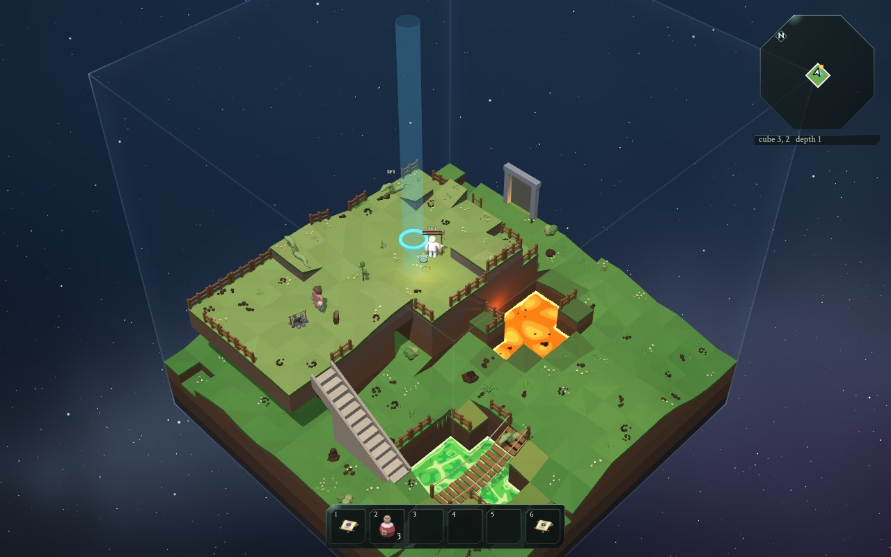
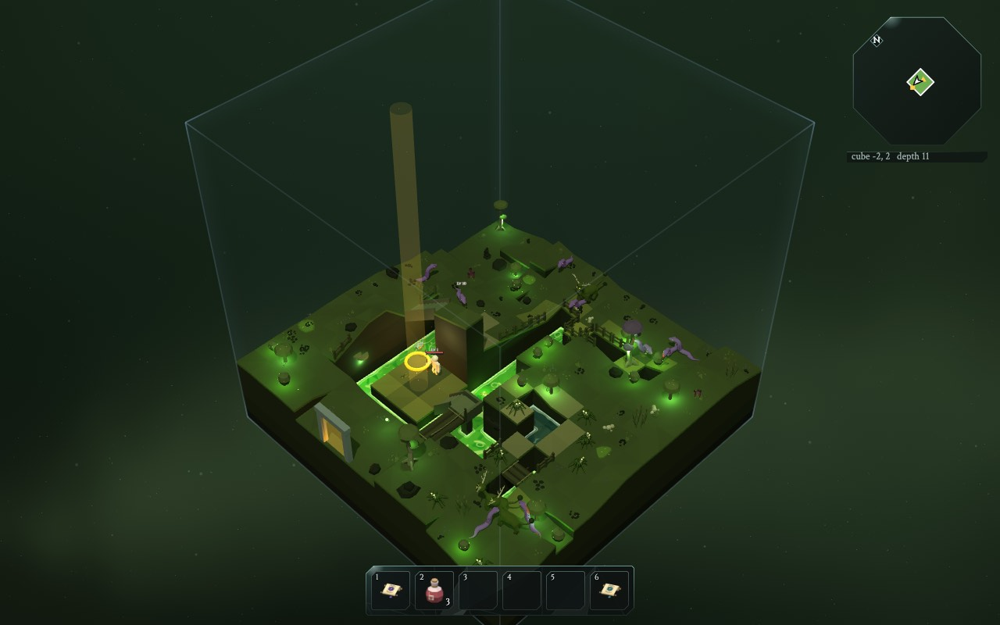
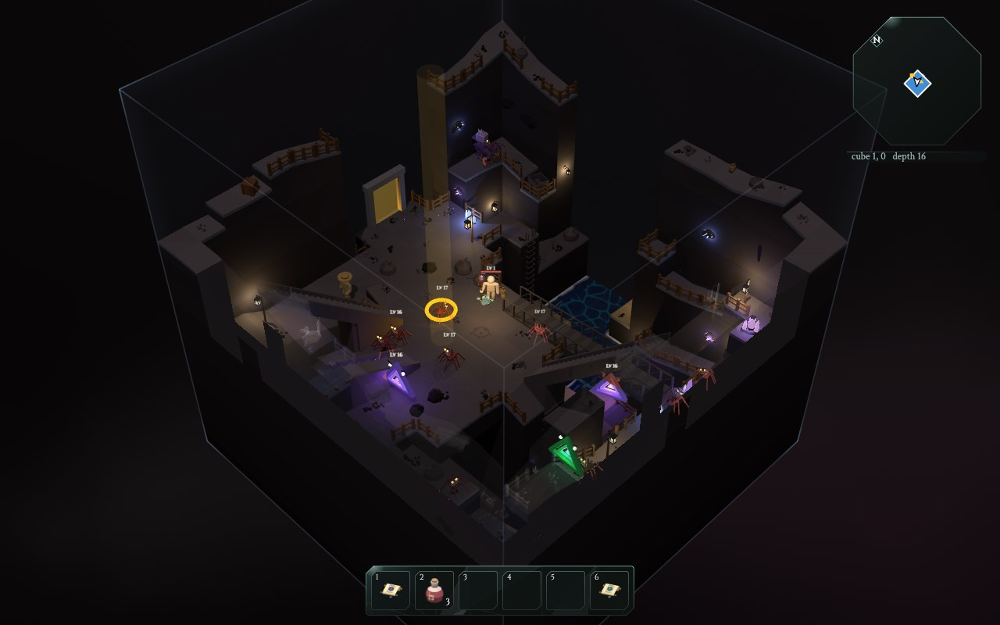
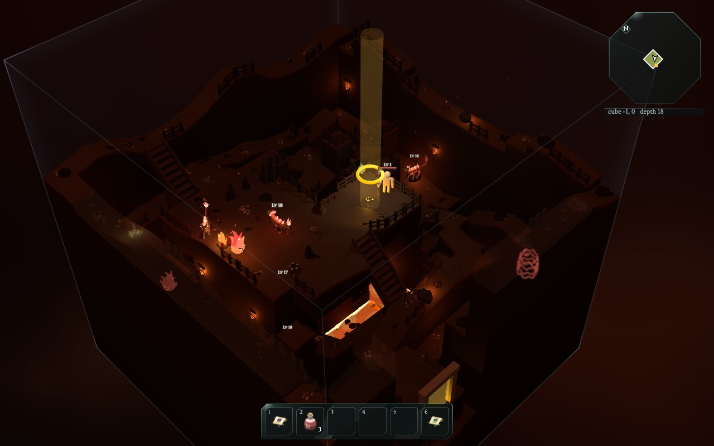

Welcome, game maker!
Willkommen, Spielemacher!
In The Glass Bird you are a small hero who climbs down through a world of floating cubes.
Im Spiel Der Glasvogel bist du ein kleiner Held, der durch eine Welt aus schwebenden Würfeln nach unten klettert.
You start in a cosy town at the top, where you can even walk into some of the houses. Every cube is a room. Somewhere in each floor there is a well that takes you one floor deeper. There are 21 floors, called depths. At the very bottom, at depth 20, is the core.
Du fängst in einer gemütlichen Stadt ganz oben an, in der du sogar in ein paar Häuser hineingehen kannst. Jeder Würfel ist ein Raum. Irgendwo auf jedem Stockwerk gibt es einen Brunnen, der dich ein Stockwerk tiefer bringt. Es gibt 21 Stockwerke, die Tiefen heißen. Ganz unten, in Tiefe 20, liegt der Kern.
On the way there are snakes, spiders, flaming cats, treasure chests and magic swords.
Unterwegs gibt es Schlangen, Spinnen, brennende Katzen, Schatztruhen und magische Schwerter.
In this guide you look inside the game, to see how all of that is made.
Auf diesem Rundgang schaust du ins Innere des Spiels und siehst, wie das alles gemacht ist.

A game is a program
Ein Spiel ist ein Programm
A program is a list of instructions that a computer follows. Exactly. Every time. It never guesses what you meant.
Ein Programm ist eine Liste von Anweisungen, die ein Computer befolgt. Ganz genau. Jedes Mal. Er rät nie, was du gemeint hast.
A game is a special kind of program. It does three things, over and over, very fast:
Ein Spiel ist eine besondere Art von Programm. Es macht immer wieder drei Dinge, sehr schnell:
- Listen: which keys are pressed? Where did you click?
- Hören: Welche Tasten sind gedrückt? Wo hast du geklickt?
- Think: move the hero, let the monsters decide what to do, check if a sword hit something.
- Denken: den Helden bewegen, die Monster entscheiden lassen, was sie tun, prüfen, ob ein Schwert etwas getroffen hat.
- Draw: paint a new picture of everything on the screen.
- Malen: ein neues Bild von allem auf dem Bildschirm malen.
That happens about 60 times every second, so it looks like a movie that you can steer.
Das passiert ungefähr 60-mal pro Sekunde. Darum sieht es aus wie ein Film, den du steuern kannst.
See the heartbeat of the game Sieh dir den Herzschlag des Spiels anThink of a recipe
Denk an ein Rezept
A recipe says: "Crack two eggs. Stir. Heat the pan." If you follow it exactly, you get pancakes.
Ein Rezept sagt: "Schlag zwei Eier auf. Rühr um. Mach die Pfanne heiß." Wenn du es genau befolgst, bekommst du Pfannkuchen.
Code is the same, but the cook is very fast and very literal. If the recipe says "add 100 eggs", it adds 100 eggs.
Code ist genauso, nur ist der Koch sehr schnell und nimmt alles wörtlich. Wenn im Rezept "nimm 100 Eier" steht, nimmt er 100 Eier.
That is why games need careful instructions, and also why they need checks (more about those later).
Darum brauchen Spiele sorgfältige Anweisungen, und auch Prüfungen (dazu später mehr).
What the game is made of
Woraus das Spiel besteht
The game lives in a folder with a few big parts. You can think of them as the buildings in the town:
Das Spiel liegt in einem Ordner mit ein paar großen Teilen. Du kannst sie dir wie die Gebäude in der Stadt vorstellen:
src/ the brain
src/ das Gehirn
All the code: rules, world building, monsters, drawing. About 200 small files, some 14,000 lines.
Der ganze Code: Regeln, Weltbau, Monster, Malen. Etwa 200 kleine Dateien, rund 14.000 Zeilen.
assets/ the storeroom
assets/ das Lager
3D models (the hero, monsters, swords, houses) and little pictures of items.
3D-Modelle (der Held, Monster, Schwerter, Häuser) und kleine Bilder von Gegenständen.
blender/ the workshop
blender/ die Werkstatt
Scripts that build the models in a 3D program called Blender, then put them in the storeroom.
Skripte, die die Modelle in einem 3D-Programm namens Blender bauen und dann ins Lager legen.
music/ the band
music/ die Band
13 songs, written as text files. The game plays them with a tiny synthesizer.
13 Lieder, als Textdateien geschrieben. Das Spiel spielt sie mit einem winzigen Synthesizer.
tests/ the inspectors
tests/ die Prüfer
Over 20 files of checks that make sure the rules still work after every change.
Über 20 Dateien mit Prüfungen, die nach jeder Änderung kontrollieren, dass die Regeln noch stimmen.
docs/ the library
docs/ die Bibliothek
Notes that explain how everything works (for grown-ups). This guide is the kids' version.
Notizen, die erklären, wie alles funktioniert (für Erwachsene). Dieser Rundgang ist die Version für Kinder.
A world made of cubes
Eine Welt aus Würfeln
Every cube is a room of 24 by 24 squares, called cells. A cube can have several floors stacked on top of each other, with stairs, ladders and bridges between them. Each depth has its own look, its own monsters and its own song.
Jeder Würfel ist ein Raum aus 24 mal 24 Feldern, die Zellen heißen. Ein Würfel kann mehrere Stockwerke übereinander haben, mit Treppen, Leitern und Brücken dazwischen. Jede Tiefe hat ihr eigenes Aussehen, ihre eigenen Monster und ihr eigenes Lied.



Here is the amazing part: nobody drew these cubes. The game invents every single one while you play. Two players can get completely different worlds.
Und jetzt kommt das Erstaunliche: Niemand hat diese Würfel gezeichnet. Das Spiel erfindet jeden einzelnen, während du spielst. Zwei Spieler können völlig verschiedene Welten bekommen.
How the world gets invented Wie die Welt erfunden wirdHow it runs in your browser
Wie es in deinem Browser läuft
The game is a web page. Your browser already knows how to run JavaScript, so there is nothing to install for players.
Das Spiel ist eine Webseite. Dein Browser kann schon JavaScript ausführen, also müssen Spieler nichts installieren.
- The browser opens
index.html. - Der Browser öffnet
index.html. - That page loads
src/main.js, which loads the files it needs, which load the files they need. - Diese Seite lädt
src/main.js, das die Dateien lädt, die es braucht, die wiederum die Dateien laden, die sie brauchen. - A helper library called three.js knows how to draw 3D with the graphics card.
- Eine Hilfsbibliothek namens three.js weiß, wie man mit der Grafikkarte 3D malt.
- A worker invents cubes in the background, so the game never freezes while it thinks.
- Ein Worker erfindet im Hintergrund Würfel, damit das Spiel nie einfriert, während es nachdenkt.
Secret switches
Geheime Schalter
The game's address can carry secret switches, after a ?. Try them:
Die Adresse des Spiels kann geheime Schalter haben, hinter einem ?. Probier sie aus:
How to use this guide
So funktioniert dieser Rundgang
- Move with ← → or the slots at the bottom (like the game's quick bar).
- The tag in the corner of each slide shows its level: Lv 1 big idea, Lv 2 how it works, Lv 3 real code. Use the Lv buttons at the top to hide the deeper ones.
- Blue dive deeper buttons take you to a more detailed slide. Gold portals take you to another room.
- Press S to read a room as one long page instead.
- Blättere mit ← → oder mit den Feldern unten (wie die Schnellleiste im Spiel).
- Das Schild in der Ecke jeder Folie zeigt ihre Stufe: Lv 1 große Idee, Lv 2 so funktioniert es, Lv 3 echter Code. Mit den Lv-Knöpfen oben kannst du die tieferen ausblenden.
- Blaue tiefer tauchen-Knöpfe bringen dich zu einer genaueren Folie. Goldene Portale bringen dich in einen anderen Raum.
- Drück S, um einen Raum als eine lange Seite zu lesen.
- Mit EN oben rechts liest du alles auf Englisch.
- Boxes marked TRY IT are things to play with. When they say REAL GAME CODE, they run the actual code of the game, right here on the page.
- Kästen mit AUSPROBIEREN sind zum Spielen. Wenn dort ECHTER SPIELCODE steht, läuft der echte Code des Spiels, direkt hier auf der Seite.
- Point at dotted words to see what they mean.
- Zeig auf gepunktete Wörter, um zu sehen, was sie bedeuten.